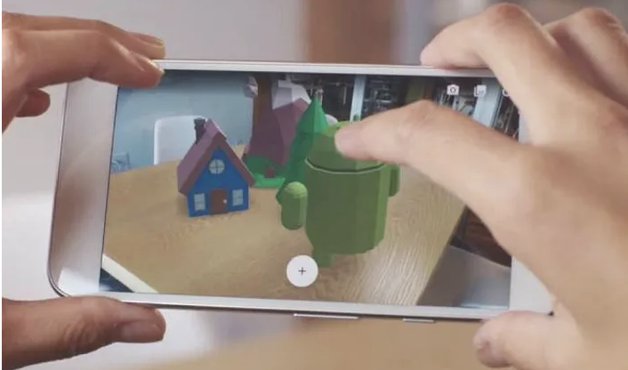

In a small group, we created an AR project in Unity, where we created an image to be tracked and images that are displayed on top of the track image when the application is run. These images consisted of things inspired by nature and wildlife.
The app was created in Unity on my computer and slowly started building the app. The very first build wasn’t successful in any means because there was only a black screen and the object wasn’t showing up either. The second day of working on the app, there was progress that the object began to show up because in the AR Camera after adjusting the size of the object with the image that was placed on top...
When we first started working in Unity I was unable to attend class due to sickness, so when it was time to start this project I was a bit confused. However, I watched some videos on YouTube and read over my AR notes and was then ready to work on our AR Garden. On the second day of working on the project, we had a bit of trial and error...
